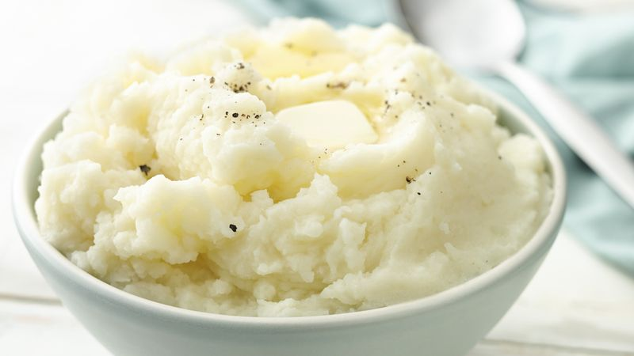

Really Good Mashed Potatoes

Description
In the mood for a delicious side dish that will completely
destroy your arteries? Following this recipe will ensure
that your next doctor's visit will be a stressful one!
Ingredients
(Serves 1)
- 1/2 lb yukon gold or yellow potatoes
- 2 oz extra sharp cheddar cheese, grated
- 2 tsp garlic powder
- 3 tbsp unsalted butter, cubed
- 1/4 cup half&half cream OR milk
- salt to taste
- ground black pepper to taste
- chopped chives for garnish
Steps
- Peel and cut potatoes into 2 in. cubes
- Fill a pot with water and add some salt (about 2 tbsp) and heat atop a stove burner until boiling
- Add potatoes to pot of boiling water and let cook until a knife or fork can pierce through them with no resistance (about 15-20 min)
- Remove the potatoes from the water via a strainer and let some of the water evaporate
- Pass potatoes through a ricer into a mixing bowl OR place all the potatoes in the bowl and use a potato masher until potatoes are desired consistency
- Add cream, butter, and garlic powder to bowl and mix using a rubber spatula until homogeneous
- While continuing to mix, add grated cheddar cheese until homogeneous
- Add salt and pepper to taste
- Transfer mashed potatoes to serving bowl and garnish with chopped chives
- Enjoy!